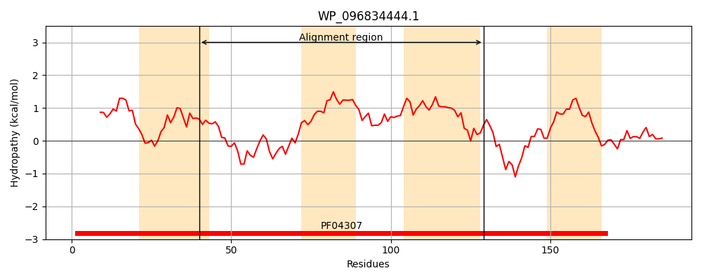
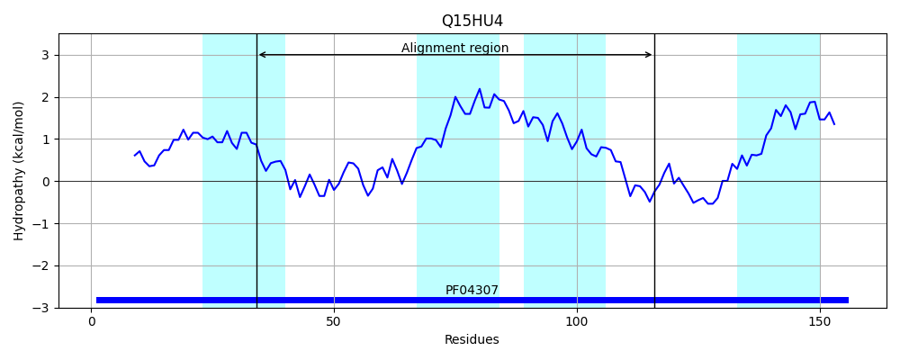
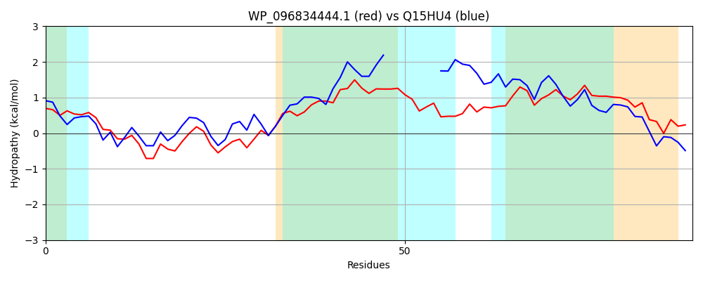

Hit Accession: Q15HU4
Hit TCID: 3.A.7.14.2
Hit Description: gnl|BL_ORD_ID|12755 gnl|TC-DB|Q15HU4|3.A.7.14.2 TcpI - Clostridium perfringens.
Mach Len: 90
e:0.000000
Query TMS Count : 4
Hit TMS Count: 4
TMS-Overlap Score: 2.450000
Predicted Substrates:CHEBI:4291;deoxyribonucleic acid
BLAST Alignment:
| Protein Hydropathy Plots: | |
|---|---|
|  |  |
Pairwise Alignment-Hydropathy Plot: | |
|  | |